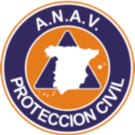
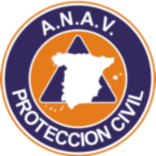

ES
ES
 EN
EN
 DE
DE
 FR
FR
 NO
NO
 IS
IS
Los Llanos de Aridane viðurkennir starf stjórnvalda og fyrirtækja sem tengjast öryggi
Bæjarráð Los Llanos de Aridane hélt með góðum árangri fyrstu öryggis- og neyðarsýninguna sem hluti af Alþjóðadegi Almannavarna...
Lesa meiraBæjarráð Los Llanos de Aridane hélt með góðum árangri fyrstu öryggis- og neyðarsýninguna sem hluti af Alþjóðadegi Almannavarna...
Lesa meiraMeð höfuðstöðvar í Jinámar-dalnum sinnir samtökin óeigingjörnu björgunarstarfi og félagslegri aðstoð án stuðnings frá opinberum stofnunum...
Lesa meiraKanaríska sveitin flytur til Paiporta til að dreifa mat, teppum og hreinlætisvörum...
Lesa meira
 
